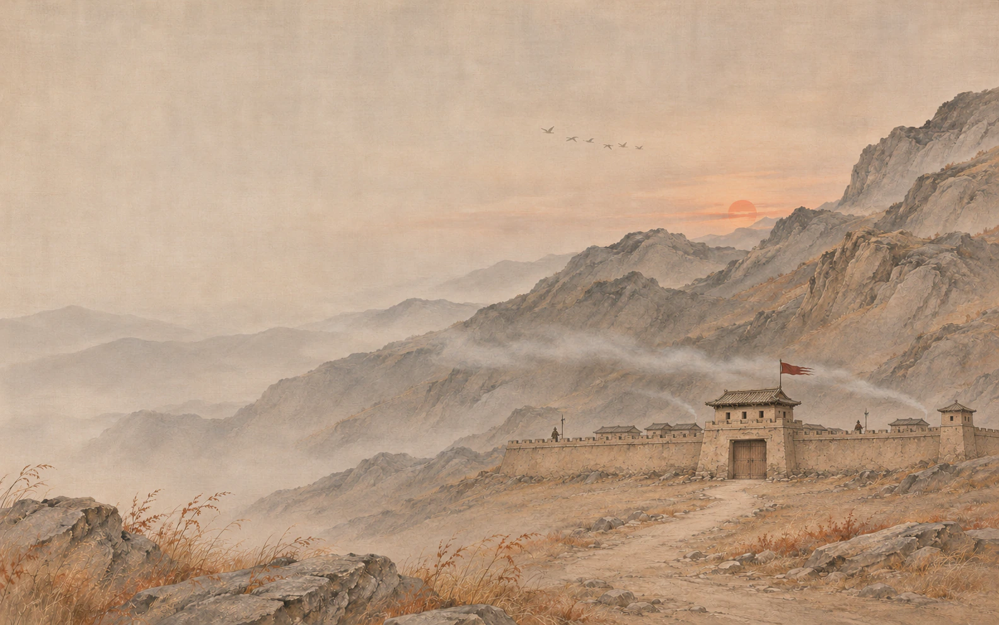

屏幕闲下来，
诗意便有了位置
电脑闲置时，屏保显示诗词和配画。
解锁后直接回到工作界面。

空山新雨后，天气晚来秋。 明月松间照，清泉石上流。 竹喧归浣女，莲动下渔舟。 随意春芳歇，王孙自可留。 王维《山居秋暝》

毕竟西湖六月中， 风光不与四时同。 接天莲叶无穷碧， 映日荷花别样红。 杨万里《晓出净慈寺送林子方》
电脑闲置时，屏保显示诗词和配画。
解锁后直接回到工作界面。
空山新雨后，天气晚来秋。 明月松间照，清泉石上流。 竹喧归浣女，莲动下渔舟。 随意春芳歇，王孙自可留。 王维《山居秋暝》
按作者、篇名或原文查找作品，阅读正文、诸家评语和注释。也可以从篇中的语与意找到相关作品，或全屏预览当前这一篇。
雨打梨花深闭门， 孤负青春，虚负青春。 赏心乐事共谁论？ 花下销魂，月下销魂。 愁聚眉峰尽日颦， 千点啼痕，万点啼痕。 晓看天色暮看云， 行也思君，坐也思君。 唐寅《一剪梅·雨打梨花深闭门》

塞下秋来风景异，衡阳雁去无留意。 四面边声连角起。 千嶂里，长烟落日孤城闭。 浊酒一杯家万里，燕然未勒归无计。 羌管悠悠霜满地。 人不寐，将军白发征夫泪。 范仲淹《渔家傲·秋思》

秋风起兮白云飞， 草木黄落兮雁南归。 兰有秀兮菊有芳， 携佳人兮不能忘。 泛楼船兮济汾河， 横中流兮扬素波。 箫鼓鸣兮发棹歌， 欢乐极兮哀情多。 少壮几时兮奈老何！ 刘彻《秋风辞》
免费，适用于 macOS 14 及以上。Apple Silicon 与 Intel 通用安装包。以下两种安装方式，任选一种即可。
当前为 1.0.1 公开测试版，尚未完成 Apple 公证。
任选一种方式安装主 App，再按下面的步骤启用屏保。
按 App 的引导安装屏保，再到系统设置中选择“一瞥诗词”。只想阅读，可以跳过这一步。
先在系统设置中预览，再试一次闲置启动。把屏保启动时间设在显示器关闭之前；密码要求仍由 macOS 管理。
不需要。退出 App 后，系统屏保仍可显示诗画。打开 App 可以阅读、调整设置和手动预览。
内置诗词和配景可以离线使用。新配景下载默认关闭；你开启后，App 运行时每天检查一次。关闭下载不会删除已有图片。
回看最近展示的作品，需要读取系统屏保为一瞥保存的记录。下载配景也需要访问共享位置。App 会先说明用途，再由你决定是否申请系统权限；暂不允许，也能阅读和手动预览。
更新 App 后，请在设置中检查屏保版本，并按提示更新。卸载时，先在系统设置中改用其他屏保，再分别移除 App 和“一瞥诗词”。Homebrew 只管理主 App，另行安装的屏保需要单独移除。不要删除整个系统屏保数据容器。